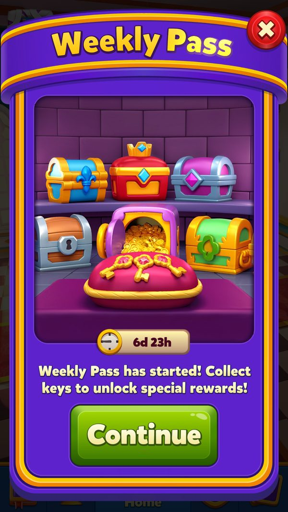
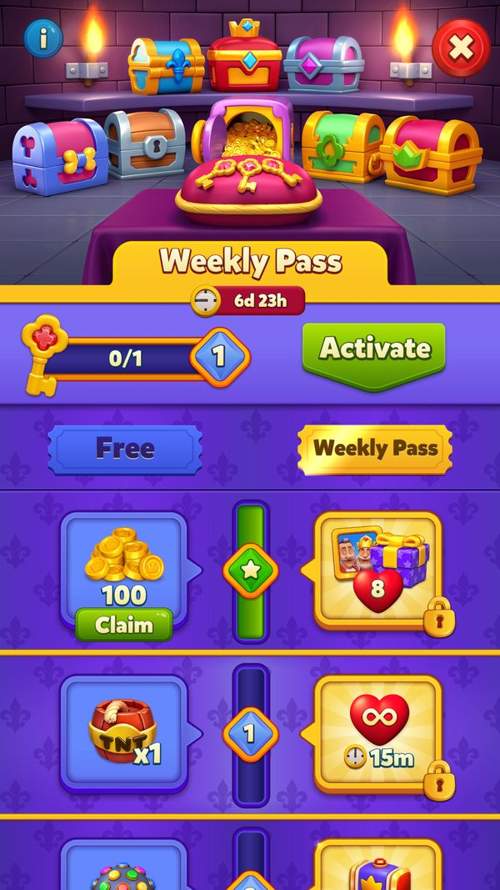

Vé Tuần (Weekly Pass)
Pass rút gọn chạy theo tuần với 9 mốc chìa khóa, hai nhánh thưởng miễn phí và Gold, kết thúc bằng két vàng 5000 coin.
Mô tả
- Weekly Pass là phiên bản rút gọn của Royal Pass, chạy theo tuần với 9 mốc (s = 0..8) thay vì 32 mốc.
- Người chơi thu chìa khóa bằng cách thắng level; mỗi mốc có một ngưỡng chìa khóa (t) để mở thưởng, một vài mốc dùng chung ngưỡng.
- Mỗi mốc có hai nhánh thưởng song song: nhánh miễn phí (f) cho mọi người và nhánh Gold (g) chỉ mở khi đã mua pass.
- Mua pass mở toàn bộ nhánh Gold, kể cả các mốc đã vượt trước đó, và nâng trần mạng từ 5 lên 8.
- Mốc cuối (mốc 8, ngưỡng 500 chìa khóa) là két vàng chỉ dành cho nhánh Gold, trị giá 5000 coin.
- Ngoài vật phẩm, pass còn mở cosmetic cho hồ sơ: khung avatar (frame) và tên đặc biệt (styled name).
- Weekly Pass và Royal Pass loại trừ lẫn nhau — hệ thống bỏ qua pass tuần khi người chơi còn tiến độ Royal Pass cũ.
- Đồng đội có thể mua tặng pass; người nhận claim ngay trong chat đội mà không phải trả tiền.
- Khi hết tuần, hệ thống ép nhận nốt thưởng còn treo rồi dọn dữ liệu, hạ trần mạng về 5 và chờ pass mới ở phiên sau.
- Pass có thể đổi theme theo mùa lễ, thay cả bộ tài nguyên hình ảnh lẫn tiền tố bản dịch.
Lưu ý
Tình trạng ảnh đã rà soát
Có ảnh màn hình
Gallery có ảnh game đã kiểm tra; số ảnh không biểu thị mọi trạng thái hoặc use case đã được chụp.
Rà soát ngày 08/10/2026. Xem bảng kiểm kê toàn wiki.
Ảnh chụp màn hình (2)
Bổ sung ngày 08/10/2026, LDPlayer Android 9, 1080×1920, Royal Match v38174. Game chạy offline bằng bản sao save; config dùng cache thật/default APK khi có. EventId, thời hạn, progress hoặc AB có thể là fixture thử; ảnh không xác nhận server nhận claim hay có người thi đấu thật. Các ảnh cũ giữ nguyên nguồn playtest trước. Bấm ảnh để phóng to, dùng phím ← → để chuyển ảnh.




Mở khóa & điểm vào
WeeklyPassManager.WeeklyPassUnlockLevel = 37 (const); get_HasEnoughLevel và TryEnterEvent kiểm tra Level > 0x24 (36) tức từ level 37. get_IsIconActive() đọc key 'WeeklyPass' và kiểm tra event còn hạn; get_IsWeeklyPassEnabled() / !isDisabledByBackend. IsAllBundlesDownloaded() kiểm tra nhóm bundle 'weekly_pass_common'. ShouldUpdateInfo bỏ qua khi còn tiến độ Royal Pass cũ (log 'There is old RoyalPass progress, old RoyalPass EventId: {0}').
Điểm vào:
- Icon Weekly Pass ở Home (bundle 'weekly_pass_icon', prefab 'WeeklyPassIconBundledPrefab'), OnIconClick() / OnWeeklyPassIconClick
- Popup 'WeeklyPassPopup' (bundle 'weekly_pass_main')
- Info dialog 'WeeklyPassInfoDialog'
- Offer mua pass ở Home/Shop/Royal Favor (offerPriorityHomescene/Shop/Favor)
- Chat đội: 'WeeklyPassChatClaimViewBundledPrefab', 'WeeklyPassChatLifeRequestContainer' (bundle 'weekly_pass_chat')
- Trong game: 'WeeklyPassClaimSpeechBubble', 'WeeklyPassEgoDialogFooter' (bundle 'weekly_pass_gameplay')
- Deeplink 'weeklypass'
Cách hoạt động
- Người chơi đạt Level 37 (WeeklyPassUnlockLevel = 37; TryEnterEvent kiểm tra Level > 36) và tải xong nhóm bundle 'weekly_pass_common' (IsAllBundlesDownloaded).
- Server gửi WeeklyPassInfo trong gói refresh (Id, RemainingTime, ConfigVersion, Config); client log 'EventId:{0} ', 'RemainingTime:{0} ' (UpdateInfo).
- ShouldUpdateInfo(info) lọc các trường hợp bỏ qua: pass bị tắt phiên này, event đã claim, event sắp claim, hoặc còn tiến độ Royal Pass cũ.
- Nếu là event mới, TryEnterEvent đặt ShouldProgressFromLevel = false, gọi WeeklyPassProgress.EnterEvent(id) reset step/keyCount/freeProgress/paidProgress và nạp config 9 mốc (WeeklyPassConfigHelper.UpdateUserConfig).
- Icon Weekly Pass hiện ở Home (bundle 'weekly_pass_icon') với số chìa khóa và đồng hồ đếm ngược (get_IsIconActive, get_IsEventActive).
- Lần đầu thấy pass, hệ thống đẩy dialog tutorial (TryAddStartDialog, log 'Push start first tutorial dialog by {0}') và đánh dấu bit 117/118 khi xem xong (SetStartDialogSeen, SetTutorialAsSeen).
- Vào level, EnteredLevel() bật cờ tiến độ theo trạng thái icon; thắng level thì WonLevel(collectableCount) cộng chìa khóa và log 'Update Key Count: {0}' (ghi bit 82..98).
- WeeklyPassProgress.SaveAndSyncData gom đồng bộ lên server qua serverSyncRoutine; UpdateProgress(value) log 'WeeklyPass Progress Update, Old :{0} => New :{1}'.
- Về Home, DidStepUp() / GetClaimableStepAfterLevelWin() phát hiện mốc mới; TryAddFlowActions / TryAddInfoDialog tự mở popup pass (log 'Push info dialog by {0}').
- Mở popup (WeeklyPassPopup, bundle 'weekly_pass_main'), PrepareAnimData() dựng WeeklyPassAnimData chạy thanh tiến độ từ PreviousKeyCount (bit 99..115) tới KeyCount.
- Nhận thưởng: IsThereAnyUnclaimedAvailableRewards() dò 2 bitmask FreeProgress (bit 12..43) và PaidProgress (bit 44..75), ClaimAndGetAllUnclaimedRewards() trả gói thưởng với source 'WeeklyPassUnclaimed'.
- SetRewardRevealDialogSeen() ghi lại mốc đã nhận (log 'Update ClaimStep: {0}, IsFree: {1}') và bắn analytics PassClaim(passType, eventId, stage, claimStage, safeStage, isFree, ...).
- Nếu mua pass (hoặc được đồng đội tặng qua WeeklyPassTcpRequest(buyerUserId)), IsPurchased (bit 116) = true: mở toàn bộ nhánh Gold và LifeHelper dùng trần 8 mạng (RoyalPassMaxPossibleLivesToHave = 8).
- Đạt mốc 8 (t = 500 chìa khóa) mở két vàng: ClaimFinalReward() cộng 5000 C (gn = 'Safe'), BonusBankClaimIsShown() đánh dấu đã hiện hiệu ứng.
- Còn 1 ngày cuối, get_ShouldShowLastDayNotification() bật nhắc nhở dùng nốt chìa khóa.
- Hết hạn: ShouldForceClaim() (log 'TryClaimEndOfTheEvent s:{0} c:{1} t:{2} e:{3} Ie:{4} d:{5}') đẩy dialog nhận nốt (TryAddClaimDialog, log 'Push claim dialog by {0}'), ClaimSessionCompleted() và EndedDialogIsShown() chốt phiên.
- ClearWeeklyPassInfo() (log 'Clearing WeeklyPass info: {0}') dọn dữ liệu, đặt disableWeeklyPassEventForThisSession = true và gọi ResetLivesToDefault() hạ trần mạng 8 → 5; pass mới chỉ bắt đầu ở phiên sau.
Luồng chi tiết theo code
Bind()/FillFromLocal() → LoadDataAndProgress() nạp WeeklyPassData và WeeklyPassProgress (BitArray 119 bit lưu dạng chuỗi). Server gửi WeeklyPassInfo → UpdateInfo(info) log 'EventId:{0} ', 'RemainingTime:{0} ', 'ConfigVersion:{0} Config:{1}'; ShouldUpdateInfo(info) bỏ qua với các lý do có log riêng: 'WeeklyPass disabled for this session: {0}', 'This event is already claimed: {0}/{1}', 'This event will be claimed: {0}', 'There is old RoyalPass progress, old RoyalPass EventId: {0}'. TryEnterEvent(info) kiểm tra Level > 36 và WeeklyPassProgress.IsSameEvent(info.Id); nếu là event mới thì ShouldProgressFromLevel = false, WeeklyPassProgress.EnterEvent(id), WeeklyPassConfigHelper.UpdateUserConfig(configVersion, config), lấy theme và EventsHelper.ResetEventTheme. UpdateWeeklyPassEventInfo(info) log 'WeeklyPass info updated.'. Trong level: EnteredLevel() bật cờ theo IsIconActive; WonLevel(collectableCount) tăng KeyCount (bit 82..98) và log 'Update Key Count: {0}' rồi WeeklyPassProgress.SaveAndSyncData. Ở Home: PopupOpened() → PrepareAnimData() (WeeklyPassAnimData) chạy thanh tiến độ; DidStepUp() phát hiện lên mốc; GetClaimableStepAfterLevelWin() cho biết mốc mới. Claim: IsThereAnyUnclaimedAvailableRewards() và ClaimAndGetAllUnclaimedRewards() với source 'WeeklyPassUnclaimed'; SetRewardRevealDialogSeen() log 'Update ClaimStep: {0}, IsFree: {1}'. Két vàng ở mốc 8 (t = 500 chìa khoá, 5000 coin) nhận bằng ClaimFinalReward(); BonusBankClaimIsShown() đánh dấu đã hiện. Kết thúc: ShouldForceClaim() log 'TryClaimEndOfTheEvent s:{0} c:{1} t:{2} e:{3} Ie:{4} d:{5}' → TryAddClaimDialog log 'Push claim dialog by {0}'; ClearWeeklyPassInfo() log 'Clearing WeeklyPass info: {0}' và ResetLivesToDefault(): nếu WeeklyPassProgress.IsPurchased và LifeHelper.GetLives() > 4 thì dịch FullLivesTimeInMs (trừ 3 khoảng hồi mạng) để hạ trần từ 8 về 5.
Phần thưởng
PHẦN THƯỞNG WEEKLY PASS (9 MỐC)
| Mốc/Rương/Hạng | Điều kiện | Phần thưởng |
|---|---|---|
| Mốc 0 (s=0) | t = 0 chìa khóa | Free: 100 C — Gold: (không có) |
| Mốc 1 (s=1) | t = 1 chìa khóa | Free: 1 T — Gold: 15 ULV |
| Mốc 2 (s=2) | t = 2 chìa khóa | Free: 1 L — Gold: 1 H |
| Mốc 3 (s=3) | t = 3 chìa khóa | Free: 1 J — Gold: 1 Ca |
| Mốc 4 (s=4) | t = 5 chìa khóa | Free: 100 C — Gold: 1 A |
| Mốc 5 (s=5) — rương lớn | t = 5 chìa khóa | Free (fn='WoodFirst'): 15 ULV  1Rocket — Gold (gn='Bone'): 15 UT 1Rocket — Gold (gn='Bone'): 15 UT  1Royal Hammer 1Royal Hammer  100Coin 100Coin |
| Mốc 6 (s=6) | t = 10 chìa khóa | Free: 1 H — Gold: 2 L |
| Mốc 7 (s=7) | t = 10 chìa khóa | Free: 1 T — Gold: 200 C |
| Mốc 8 (s=8) — Két vàng (Safe) | t = 500 chìa khóa, phải có pass | Free: (không có) — Gold (gn='Safe'): 5000 C |
PHẦN THƯỞNG NHÁNH MIỄN PHÍ (f)
| Mốc/Rương/Hạng | Điều kiện | Phần thưởng |
|---|---|---|
| Mốc 0 | 0 chìa khóa | 100Coin |
| Mốc 1 | 1 chìa khóa |  1TNT 1TNT |
| Mốc 2 | 2 chìa khóa |  1Light Ball 1Light Ball |
| Mốc 3 | 3 chìa khóa |  1Jester Hat 1Jester Hat |
| Mốc 4 | 5 chìa khóa | 100Coin |
| Mốc 5 (WoodFirst) | 5 chìa khóa |  ∞15 phútUnlimited Lives 1Rocket ∞15 phútUnlimited Lives 1Rocket |
| Mốc 6 | 10 chìa khóa | 1Royal Hammer |
| Mốc 7 | 10 chìa khóa | 1TNT |
| Mốc 8 | 500 chìa khóa | (không có thưởng free) |
| Tổng Coins | Hoàn thành nhánh free | 200Coin (suy luận) |
PHẦN THƯỞNG NHÁNH GOLD (g)
| Mốc/Rương/Hạng | Điều kiện | Phần thưởng |
|---|---|---|
| Mốc 0 | 0 chìa khóa | (không có thưởng gold) |
| Mốc 1 | 1 chìa khóa + đã mua pass | ∞15 phútUnlimited Lives |
| Mốc 2 | 2 chìa khóa + đã mua pass | 1Royal Hammer |
| Mốc 3 | 3 chìa khóa + đã mua pass |  1Cannon 1Cannon |
| Mốc 4 | 5 chìa khóa + đã mua pass | |
| Mốc 5 (Bone) | 5 chìa khóa + đã mua pass | ∞15 phútUnlimited TNT 1Royal Hammer 100Coin |
| Mốc 6 | 10 chìa khóa + đã mua pass | 2Light Ball |
| Mốc 7 | 10 chìa khóa + đã mua pass | 200Coin |
| Mốc 8 (Safe) | 500 chìa khóa + đã mua pass | 5000Coin |
| Tổng Coins | Hoàn thành nhánh Gold | 5300Coin (suy luận) |
QUYỀN LỢI KHÁC KHI MUA PASS
| Mốc/Rương/Hạng | Điều kiện | Phần thưởng |
|---|---|---|
| Trần mạng | IsPurchased = true (bit 116) | Max lives 5 → 8 (LifeHelper.RoyalPassMaxPossibleLivesToHave = 8) |
| Khung hồ sơ | Đạt mốc chứa FrameStyle | Frame avatar (GetCurrentPassFrameId) |
| Tên đặc biệt | Đạt mốc chứa StyledName | Styled name cho hồ sơ (GetCurrentPassStyledNameId / GetUserProfileStyledNamesIds) |
| Mở lại mốc đã vượt | Mua giữa chừng | Toàn bộ thưởng Gold của các mốc đã đạt |
CẤU TRÚC MỐC DO SERVER CẤU HÌNH
| Mốc/Rương/Hạng | Điều kiện | Phần thưởng |
|---|---|---|
| WeeklyPassConfig.steps | 9 phần tử mặc định, server override theo ConfigVersion | Mỗi step = {s t r = {fn f gn g}} (server) |
| WeeklyPassUserConfigInfo | Config riêng người chơi (TryUpdateUserConfigWithRefreshInfo) | (server) |
| Rương hiển thị | Theo loại mốc | 4 sprite: weekly_pass_chest_icon_blue / _green / _pink / _special |
Phần thưởng theo code
| Ngữ cảnh | Phần thưởng | Evidence |
|---|---|---|
| Nhánh miễn phí (f) | Mốc 0: 100 C 1: 1 T 2: 1 L 3: 1 J 4: 100 C 5: 15 ULV 1Rocket 6: 1 H 7: 1 T 8: (không có) | weekly_pass_default_config.json steps[].r.f |
| Nhánh Gold (g) | Mốc 0: (không có) 1: 15 ULV 2: 1 H 3: 1 Ca 4: 1 A 5: 15 UT 1Royal Hammer 100Coin 6: 2 L 7: 200 C 8: 5000 C (Safe) | weekly_pass_default_config.json steps[].r.g |
| Tổng Coins nhánh free | 200Coin (100 100) | weekly_pass_default_config.json (suy luận) |
| Tổng Coins nhánh Gold | 5300Coin (100 200 5000) | weekly_pass_default_config.json (suy luận) |
| Quyền lợi khác của Gold | Max lives 5 → 8 frame và styled name cho hồ sơ | WeeklyPassManager.ResetLivesToDefault; WeeklyPassManager.GetCurrentPassFrameId |
| Tên rương | Free: WoodFirst Gold: Bone Safe | weekly_pass_default_config.json fn/gn |
Số liệu chính
| Chỉ số | Giá trị | Nguồn |
|---|---|---|
| Mở khóa | Level 37 | WeeklyPassManager.WeeklyPassUnlockLevel (const) |
| Kiểm tra level thực tế | Level > 0x24 (36) | WeeklyPassManager.TryEnterEvent / get_HasEnoughLevel |
| Số mốc | 9 (s = 0..8) | weekly_pass_default_config.json steps |
| So sánh Royal Pass | 9 mốc so với 32 mốc | WeeklyPass.summary |
| Ngưỡng két vàng | 500 chìa khóa | weekly_pass_default_config.json steps[8].t |
| Thưởng két vàng | 5000 C (gn = 'Safe') | weekly_pass_default_config.json steps[8].g |
| Ngưỡng Royal Pass để so sánh | 250 chìa khóa | WeeklyPass UC-09 rules |
| Tổng Coins nhánh free | 200 C (100 + 100) | weekly_pass_default_config.json (suy luận) |
| Tổng Coins nhánh Gold | 5300 C (100 + 200 + 5000) | weekly_pass_default_config.json (suy luận) |
| Trần mạng khi có pass | 8 (thường 5) | LifeHelper.RoyalPassMaxPossibleLivesToHave |
| Bù mạng khi pass kết thúc | trừ 3 × requiredTimeInMsToFillOneLife | WeeklyPassManager.ResetLivesToDefault |
| Ngưỡng hạ mạng | LifeHelper.GetLives() > 4 | WeeklyPassManager.ResetLivesToDefault |
| Độ dài BitArray tiến độ | 119 bit | WeeklyPassProgress.BitArrayLength |
| Bit EventId | 0-11 | WeeklyPassProgress (const) |
| Bit FreeProgress | 12-43 (32 bit) | WeeklyPassProgress (const) |
| Bit PaidProgress | 44-75 (32 bit) | WeeklyPassProgress (const) |
| Bit Step | 76-81 | WeeklyPassProgress (const) |
| Bit KeyCount | 82-98 (17 bit, tối đa 131071) | WeeklyPassProgress.KeyCountStart / BitArrayOperations.UpdateBitArray |
| Bit PreviousKeyCount | 99-115 | WeeklyPassProgress (const) |
| Bit IsPurchased | 116 | WeeklyPassProgress.IsPurchasedIndex |
| Bit IsStartDialogSeen | 117 | WeeklyPassProgress (const) |
| Bit IsTutorialSeen | 118 | WeeklyPassProgress.IsTutorialSeenIndex |
| EventType | WeeklyPassFree = 40, WeeklyPassPaid = 41 | EventType (appendix/events-overview.md) |
| Số loại rương | 4 (blue / green / pink / special) | WeeklyPassBundleGroupInfo sprite weekly_pass_chest_icon_* |
| Thời lượng | RemainingTime (server); 'weekly' gợi ý 7 ngày (suy luận) | Protocol/WeeklyPassInfo.RemainingTime |
Ghi chú thiết kế
- Mốc 4 và 5 cùng ngưỡng t = 5, mốc 6 và 7 cùng ngưỡng t = 10 — thiết kế cho cảm giác nhận liên tiếp 2 mốc một lúc.
- 8 mốc đầu chỉ tốn tối đa 10 chìa khóa, còn két vàng nhảy vọt lên 500 — phần thân pass rất dễ hoàn thành, két vàng mới là mục tiêu chơi chăm.
- Vì hai pass loại trừ nhau, Weekly Pass thường là 'lấp chỗ trống' giữa các mùa Royal Pass hoặc dành cho nhóm người chơi khác.
- Trần mạng 8 là quyền lợi kéo dài suốt tuần, thường có giá trị giữ chân hơn cả gói vật phẩm trong 9 mốc.
- Cơ chế mua tặng qua chat đội biến pass thành công cụ gắn kết đội, đồng thời là kênh chuyển đổi doanh thu thêm.
Use case (20)
Bấm vào từng use case để mở. Mở/đóng tất cả
UC-01 Mở khóa & hiện icon Weekly Pass
Các bước- get_HasEnoughLevel(); get_IsWeeklyPassEnabled(); get_IsEventActive() (RemainingTimeInMs > 0)
- get_IsIconActive() đọc key 'WeeklyPass'
- ShouldIconInactive() ẩn icon khi hết hạn
- IsAllBundlesDownloaded() và UpdateWeeklyPassBundlesDownloadSettings() log 'Set Weekly Pass {0} bundles as isNeededBundle'
| Actor | System |
|---|---|
| Trigger | Vào Home khi đủ level và server có pass tuần |
| Điều kiện | Level ≥ 37, bundle 'weekly_pass_common' đã tải |
| Kết quả | Icon Weekly Pass hiện ở Home với chìa khoá và đếm ngược |
| Quy tắc / số liệu | WeeklyPassUnlockLevel = 37; TryEnterEvent kiểm tra Level > 0x24 (36). |
| Evidence | WeeklyPassManager.get_IsIconActive; WeeklyPassManager.get_HasEnoughLevel; WeeklyPassManager.get_IsWeeklyPassEnabled; WeeklyPassManager.ShouldIconInactive; WeeklyPassManager.GetUnlockLevel; WeeklyPassManager.IsAllBundlesDownloaded |
UC-02 Nhận thông tin pass từ server
Các bước- UpdateInfo(WeeklyPassInfo) log 'EventId:{0} ', 'RemainingTime:{0} ', 'ConfigVersion:{0} Config:{1}'
- ShouldUpdateInfo(info) trả false với các lý do: 'WeeklyPass disabled for this session: {0}', 'This event is already claimed: {0}/{1}', 'This event will be claimed: {0}', 'There is old RoyalPass progress, old RoyalPass EventId: {0}'
- UpdateWeeklyPassEventInfo(info) log 'WeeklyPass info updated.'
- TryUpdateUserConfigWithRefreshInfo(WeeklyPassUserConfigInfo?) log 'Update user config with refresh info V:{0}.' hoặc 'User event with id:{0} has expired!'
| Actor | Server |
|---|---|
| Trigger | Gói refresh chứa WeeklyPassInfo |
| Điều kiện | !isDisabledByBackend |
| Kết quả | Client biết pass tuần, thời hạn và bảng 9 mốc |
| Quy tắc / số liệu | Weekly Pass và Royal Pass loại trừ nhau ở cả 2 chiều (RoyalPassManager.ShouldUpdateInfo cũng kiểm tra WeeklyPass). |
| Evidence | WeeklyPassManager.UpdateInfo; WeeklyPassManager.ShouldUpdateInfo; WeeklyPassManager.UpdateWeeklyPassEventInfo; WeeklyPassManager.TryUpdateUserConfigWithRefreshInfo; RoyalPassManager.ShouldUpdateInfo |
UC-03 Vào pass mới
Các bước- TryEnterEvent(info): ShouldProgressFromLevel = false
- WeeklyPassProgress.EnterEvent(info.Id) reset step, keyCount, freeProgress, paidProgress
- WeeklyPassConfigHelper.UpdateUserConfig(configVersion, config)
- GetTheme() và EventsHelper.ResetEventTheme; downloadSettingsInitialized = false để tải bundle theme mới
| Actor | System |
|---|---|
| Trigger | Server gửi pass id mới |
| Điều kiện | Level > 36 && !WeeklyPassProgress.IsSameEvent(info.Id) |
| Kết quả | Người chơi bắt đầu tuần mới với pass mới |
| Quy tắc / số liệu | WeeklyPassProgress lưu 2 bitmask tiến độ riêng: FreeProgress (bit 12..43) và PaidProgress (bit 44..75) — mỗi bit là một mốc đã nhận. |
| Evidence | WeeklyPassManager.TryEnterEvent; WeeklyPassProgress.EnterEvent; WeeklyPassConfigHelper.UpdateUserConfig; WeeklyPassManager.OnThemeChanged |
UC-04 Thu chìa khóa khi thắng level
Các bước- EnteredLevel() bật cờ theo get_IsIconActive()
- WonLevel(collectableCount): KeyCount += collectableCount, log 'Update Key Count: {0}'
- BitArrayOperations.UpdateBitArray(data, keyCount, 82, 98) ghi vào BitArray
- WeeklyPassProgress.SaveAndSyncData đồng bộ (gom qua serverSyncRoutine)
- DidStepUp() / GetClaimableStepAfterLevelWin() xác định mốc mới mở
| Actor | Player |
|---|---|
| Trigger | Thắng level trong tuần pass |
| Điều kiện | ShouldProgress() && ShouldProgressFromLevel |
| Kết quả | Chìa khoá tăng, có thể vượt mốc |
| Quy tắc / số liệu | KeyCount 17 bit (bit 82..98, tối đa 131071); PreviousKeyCount bit 99..115 dùng cho animation. |
| Evidence | WeeklyPassManager.WonLevel; WeeklyPassManager.EnteredLevel; WeeklyPassManager.ShouldProgress; WeeklyPassManager.DidStepUp; WeeklyPassProgress.KeyCountStart |
UC-05 Nhận thưởng mốc (free / gold)
Các bước- IsThereAnyUnclaimedAvailableRewards() kiểm tra 2 bitmask FreeProgress/PaidProgress
- ClaimAndGetAllUnclaimedRewards() gom Dictionary<RewardType,int> qua AddRewardTypeToDict, source 'WeeklyPassUnclaimed'
- SetRewardRevealDialogSeen() log 'Update ClaimStep: {0}, IsFree: {1}' rồi WeeklyPassProgress.SaveAndSyncData
- AnalyticsManager.PassClaim(passType, eventId, stage, claimStage, safeStage, isFree, specialRewardType, package)
- Rương hiển thị theo sprite 'weekly_pass_chest_icon_blue / _green / _pink / _special'
| Actor | Player |
|---|---|
| Trigger | Đạt mốc hoặc mở popup |
| Điều kiện | Nhánh gold cần get_UserHasWeeklyPass |
| Kết quả | Nhận cả 2 nhánh nếu đã mua, chỉ nhánh free nếu chưa |
| Quy tắc / số liệu | get_PassType() trả loại pass cho analytics (WeeklyPassFree = 40 / WeeklyPassPaid = 41). |
| Evidence | WeeklyPassManager.ClaimAndGetAllUnclaimedRewards; WeeklyPassManager.IsThereAnyUnclaimedAvailableRewards; WeeklyPassManager.SetRewardRevealDialogSeen; WeeklyPassManager.get_UserHasWeeklyPass; WeeklyPassManager.get_PassType |
UC-06 Mua Weekly Pass
Các bước- IsPurchaseInProgress = true trong lúc giao dịch
- WeeklyPassProgress.IsPurchased (bit 116) = true sau khi thành công
- ShowRewardRevealDialogAndWeeklyPassPopupAfterPurchase(showPopup, type, shouldBlockHomeSection) mở dialog khoe thưởng đã mở
- TryAddRewardRevealDialog(showPopup) khi vào Home
- AnalyticsManager.PassPurchaseOpen / PassPurchaseSuccess
- Ưu tiên hiển thị offer theo config: offerPriorityHomescene / offerPriorityShop / offerPriorityFavor
| Actor | Player |
|---|---|
| Trigger | Bấm mua trên offer hoặc trong popup |
| Điều kiện | - |
| Kết quả | Mở toàn bộ nhánh Gold (kể cả các mốc đã vượt) và nâng max lives lên 8 |
| Quy tắc / số liệu | - |
| Evidence | WeeklyPassManager.set_IsPurchaseInProgress; WeeklyPassManager.ShowRewardRevealDialogAndWeeklyPassPopupAfterPurchase; WeeklyPassManager.TryAddRewardRevealDialog; WeeklyPassProgress.IsPurchasedIndex; AnalyticsManager.PassPurchaseSuccess |
UC-07 Được người khác mua tặng pass
Các bước- WeeklyPassTcpRequest(buyerUserId) gửi qua TCP
- Chat hiện 'WeeklyPassChatClaimViewBundledPrefab' để người nhận claim
- AnalyticsManager.PassGiftClaim(teamId, teamName, sender, passType, eventId, giftId, coin)
| Actor | Team member |
|---|---|
| Trigger | Đồng đội mua Weekly Pass tặng qua chat |
| Điều kiện | Có đội |
| Kết quả | Người nhận có Weekly Pass mà không phải trả tiền |
| Quy tắc / số liệu | 'WeeklyPassChatLifeRequestContainer' gộp với luồng xin mạng trong chat. |
| Evidence | WeeklyPassTcpRequest; WeeklyPassBundleGroupInfo.WeeklyPassChatClaimViewBundledPrefab; AnalyticsManager.PassGiftClaim |
UC-08 Ảnh hưởng đến số mạng tối đa (5 → 8)
Các bước- Có pass → LifeHelper dùng trần 8 mạng (RoyalPassMaxPossibleLivesToHave = 8)
- ClearWeeklyPassInfo() → ResetLivesToDefault(): nếu WeeklyPassProgress.IsPurchased và LifeHelper.GetLives() > 4 thì cập nhật BasicUserData.UpdateFullLivesTimeInMs theo giờ server, rồi trừ 3 × requiredTimeInMsToFillOneLife
- LifeHelper.FixFullLivesTimeInMs kẹp lại mốc mạng
| Actor | System |
|---|---|
| Trigger | Mua pass / pass kết thúc |
| Điều kiện | - |
| Kết quả | Trần mạng hạ về 5 an toàn, không mất mạng đang có quá mức |
| Quy tắc / số liệu | Cùng cơ chế với Royal Pass (chênh 3 mạng). |
| Evidence | WeeklyPassManager.ResetLivesToDefault; WeeklyPassManager.ClearWeeklyPassInfo; LifeHelper.GetLives; LifeHelper.RoyalPassMaxPossibleLivesToHave |
UC-09 Két vàng (Safe) ở mốc cuối
Các bước- Mốc 8 chỉ có thưởng gold: 5000 C với gn = 'Safe'
- ClaimFinalReward() cộng coin và ghi WeeklyPassProgress
- BonusBankClaimIsShown() đặt didShowBonusBankClaim
- 'WeeklyPassLastRowView', 'WeeklyPassLastRowSafeParticleView', 'WeeklyPassBankStepReachedParticleView', 'WeeklyPassCoinTracer' chạy hiệu ứng
| Actor | Player |
|---|---|
| Trigger | Đạt mốc 8 (t = 500 chìa khoá) |
| Điều kiện | Đã mua pass (nhánh gold) |
| Kết quả | Nhận 5000 coin từ két |
| Quy tắc / số liệu | Target két = 500 chìa khoá (so với Royal Pass là 250 + hệ thống bậc phụ). |
| Evidence | WeeklyPassManager.ClaimFinalReward; WeeklyPassManager.BonusBankClaimIsShown; weekly_pass_default_config.json steps[8]; WeeklyPassBundleGroupInfo.WeeklyPassLastRowSafeParticleView |
UC-10 Kết thúc pass và force claim
Các bước- get_IsServerEventTimeFinished() / get_IsEventActive() đổi trạng thái
- ShouldForceClaim() log 'TryClaimEndOfTheEvent s:{0} c:{1} t:{2} e:{3} Ie:{4} d:{5}'
- TryAddClaimDialog(origin) log 'Push claim dialog by {0}'
- ClaimSessionCompleted(); EndedDialogIsShown() đặt didShowEndedDialog; ClearRoyalPassEndedActionFromFlow() dọn action
- ClearWeeklyPassInfo() log 'Clearing WeeklyPass info: {0}' và đặt disableWeeklyPassEventForThisSession = true
| Actor | System |
|---|---|
| Trigger | Hết tuần |
| Điều kiện | Còn thưởng chưa nhận |
| Kết quả | Người chơi nhận nốt thưởng; pass mới chỉ bắt đầu ở phiên sau |
| Quy tắc / số liệu | willClaimEventId lưu pass chờ claim để không bị ghi đè. |
| Evidence | WeeklyPassManager.ShouldForceClaim; WeeklyPassManager.TryAddClaimDialog; WeeklyPassManager.ClaimSessionCompleted; WeeklyPassManager.EndedDialogIsShown; WeeklyPassManager.ClearWeeklyPassInfo |
UC-11 Thông báo ngày cuối
Các bước- get_ShouldShowLastDayNotification() bật cảnh báo
- Icon và popup hiển thị nhắc nhở dùng nốt chìa khoá
| Actor | System |
|---|---|
| Trigger | Còn 1 ngày cuối của pass |
| Điều kiện | get_IsEventActive |
| Kết quả | Người chơi được nhắc trước khi pass hết hạn |
| Quy tắc / số liệu | - |
| Evidence | WeeklyPassManager.get_ShouldShowLastDayNotification; WeeklyPassManager.get_IsEventActive |
UC-12 Mở popup và chạy animation
Các bước- OnIconClick() phát sự kiện OnWeeklyPassIconClick
- PopupOpened() → PrepareAnimData() dựng WeeklyPassAnimData từ PreviousKeyCount → KeyCount
- CreateRoyalPassScenePools() / CreateRoyalPassNonScenePools() tạo pool prefab (log 'Bundle can''t be loaded: {0}' nếu thiếu bundle)
- Spawn(WeeklyPassPoolId, parent, setParent) / Recycle(item) (log 'Same item to push: {0}')
- DestroyRoyalPassScenePool() / DestroyRoyalPassNonScenePoolIfNecessary() khi rời scene (get_ShouldDestroyNonScenePool)
- 'WeeklyPassCollectAnimation' và 'WeeklyPassKey' chạy hiệu ứng chìa khoá bay
| Actor | Player |
|---|---|
| Trigger | Bấm icon |
| Điều kiện | - |
| Kết quả | Popup 9 mốc hiển thị mượt, animation từ trạng thái lần trước |
| Quy tắc / số liệu | scenePoolCachedTheme nhớ theme đã dựng pool để tránh tạo lại. |
| Evidence | WeeklyPassManager.OnIconClick; WeeklyPassManager.PopupOpened; WeeklyPassManager.PrepareAnimData; WeeklyPassManager.CreateRoyalPassScenePools; WeeklyPassManager.Spawn; WeeklyPassManager.DestroyRoyalPassNonScenePoolIfNecessary |
UC-13 Tutorial lần đầu
Các bước- TryAddStartDialog(origin) log 'Push start first tutorial dialog by {0}' hoặc 'Push start new tutorial dialog by {0}' (ShouldShowNewEventStartDialog)
- StartWeeklyPassDialogTutorials(); CurrentTutorialStep (WeeklyPassTutorialStep), MoveNextStepInTutorial(), IsInTutorial()
- SetTutorialAsSeen() log 'Update IsTutorialSeen: {0}'; SetStartDialogSeen() log 'Update IsStartDialogSeen: {0}' (bit 117)
- CompleteTutorials() / ResetTutorialCache()
| Actor | Player |
|---|---|
| Trigger | Lần đầu thấy pass tuần |
| Điều kiện | ShouldShowTutorial() / !WeeklyPassProgress.IsTutorialSeen (bit 118) |
| Kết quả | Người chơi hiểu cơ chế pass tuần |
| Quy tắc / số liệu | IsStartDialogSeenIndex = 117, IsTutorialSeenIndex = 118. |
| Evidence | WeeklyPassManager.ShouldShowTutorial; WeeklyPassManager.StartWeeklyPassDialogTutorials; WeeklyPassManager.SetTutorialAsSeen; WeeklyPassManager.SetStartDialogSeen; WeeklyPassManager.CompleteTutorials; WeeklyPassProgress.IsTutorialSeenIndex |
UC-14 Dialog tự động sau level win
Các bước- TryAddFlowActions() (origin 'flow') → TryAddRewardRevealDialog(showPopup)
- TryAddInfoDialog(origin, isWin) log 'Push info dialog by {0}'
- TryAddAutoDialog(origin, isWin, hasAutoDialogBefore) điều phối với event khác
| Actor | System |
|---|---|
| Trigger | Về Home sau khi thắng level |
| Điều kiện | AEventManager.CanShowAutoPopup && get_IsIconActive |
| Kết quả | Popup pass tự mở khi có mốc mới |
| Quy tắc / số liệu | - |
| Evidence | WeeklyPassManager.TryAddFlowActions; WeeklyPassManager.TryAddInfoDialog; WeeklyPassManager.TryAddAutoDialog; WeeklyPassManager.TryAddRewardRevealDialog |
UC-15 Cosmetic: frame và styled name
Các bước- GetCurrentPassFrameId() / GetUserProfileFrameIds() lấy id khung avatar
- GetCurrentPassStyledNameId() / GetUserProfileStyledNamesIds() lấy id tên đặc biệt
- GetEventNickName() trả 'Robert' (giống Royal Pass)
| Actor | Player |
|---|---|
| Trigger | Đạt mốc chứa FrameStyle / StyledName |
| Điều kiện | - |
| Kết quả | Người chơi mở khung và tên đặc biệt cho hồ sơ |
| Quy tắc / số liệu | Cùng hệ UserProfile với Royal Pass. |
| Evidence | WeeklyPassManager.GetCurrentPassFrameId; WeeklyPassManager.GetUserProfileFrameIds; WeeklyPassManager.GetCurrentPassStyledNameId; WeeklyPassManager.GetEventNickName |
UC-16 Đổi theme mùa lễ
Các bước- WeeklyPassConfigHelper.GetTheme() đọc byte theme
- OnThemeChanged() → UpdateWeeklyPassBundlesDownloadSettings() log 'Set Weekly Pass {0} bundles as isNeededBundle'
- get_GetBundleThemePrefix() / get_GetLocalizationPrefix() đổi tiền tố tài nguyên và bản dịch
| Actor | Server |
|---|---|
| Trigger | Config có theme khác Default |
| Điều kiện | Theme nằm trong ImplementedThemes |
| Kết quả | Popup và icon đổi theo mùa lễ, text cũng đổi tiền tố |
| Quy tắc / số liệu | get_GetLocalizationPrefix là điểm khác so với Royal Pass — Weekly Pass đổi cả bộ text. |
| Evidence | WeeklyPassManager.OnThemeChanged; WeeklyPassManager.get_GetBundleThemePrefix; WeeklyPassManager.get_GetLocalizationPrefix; WeeklyPassConfigHelper.GetTheme |
UC-17 Mở bằng deeplink
Các bước- GetDeeplinkAction() = 'weeklypass'
- TryAddDeeplinkDialog() log 'WeeklyPass dialog opened with DeepLink'
| Actor | Player |
|---|---|
| Trigger | Link/notification 'weeklypass' |
| Điều kiện | get_IsIconActive |
| Kết quả | Mở thẳng popup Weekly Pass |
| Quy tắc / số liệu | - |
| Evidence | WeeklyPassManager.GetDeeplinkAction; WeeklyPassManager.TryAddDeeplinkDialog |
UC-18 Server tắt pass
Các bước- DisabledByBackend(isDisabled) log 'Disable WeeklyPass {0} from backend '
- ClearWeeklyPassInfo() dọn dữ liệu và ResetLivesToDefault()
- ClearUserCaches() dọn cache runtime
| Actor | Server |
|---|---|
| Trigger | Backend gửi cờ tắt |
| Điều kiện | - |
| Kết quả | Pass biến mất, mạng trở về hệ 5 |
| Quy tắc / số liệu | - |
| Evidence | WeeklyPassManager.DisabledByBackend; WeeklyPassManager.ClearWeeklyPassInfo; WeeklyPassManager.ClearUserCaches |
UC-19 Nhân bội chìa khóa & khóa event
Các bước- GetMultiplierTagConfig() tạo icon nhân (g__CreateWeeklyPassIcon|146_0, log 'Bundle can''t be loaded: {0}')
- SetEventLocked(value) / IsEventReadyToLock() (implement ILockableEvent)
| Actor | System |
|---|---|
| Trigger | Bật multiplier hoặc AB khoá pass |
| Điều kiện | - |
| Kết quả | Thu chìa khoá nhanh hơn; pass có thể bị khoá bởi EventLockManager |
| Quy tắc / số liệu | - |
| Evidence | WeeklyPassManager.GetMultiplierTagConfig; WeeklyPassManager.SetEventLocked; WeeklyPassManager.IsEventReadyToLock |
UC-20 Đồng bộ tiến độ lên server
Các bước- UpdateProgress(value) log 'WeeklyPass Progress Update, Old :{0} => New :{1}'
- WeeklyPassProgress.SaveAndSyncData gom qua serverSyncRoutine (preventSync chặn khi cần)
- Backend: WeeklyPassClaimRequest / WeeklyPassClaimResponse / WeeklyPassDataResponse
| Actor | System |
|---|---|
| Trigger | Thay đổi key/step/claim |
| Điều kiện | - |
| Kết quả | Tiến độ pass an toàn giữa thiết bị |
| Quy tắc / số liệu | Tiến độ là BitArray dài BitArrayLength = 119 bit lưu dạng chuỗi (stringValue). |
| Evidence | WeeklyPassManager.UpdateProgress; WeeklyPassProgress.SaveAndSyncData; Protocol.WeeklyPassClaimRequest; Protocol.WeeklyPassDataResponse; WeeklyPassProgress.BitArrayLength |
Cấu hình (27)
Gộp mọi nguồn: const trong code, JSON mặc định trong Resources, bảng static, storage key, AB test, cờ server.
| Nguồn | Key | Kiểu | Giá trị | Ý nghĩa | Nơi định nghĩa |
|---|---|---|---|---|---|
| code const | WeeklyPassUnlockLevel | int | 37 | Level mở khoá (TryEnterEvent kiểm tra Level > 36) | WeeklyPassManager (const) |
| code const | WeeklyPassProgress.BitArrayLength | int | 119 | Độ dài BitArray lưu toàn bộ tiến độ | WeeklyPassProgress (const) |
| code const | WeeklyPassProgress bitfield | int | EventId 0-11, FreeProgress 12-43, PaidProgress 44-75, Step 76-81, KeyCount 82-98, PreviousKeyCount 99-115, IsPurchased 116, IsStartDialogSeen 117, IsTutorialSeen 118 | Bố cục bit tiến độ (2 bitmask 32 bit cho 2 nhánh thưởng) | WeeklyPassProgress (const) |
| json default | theme | byte | 0 (Default) | Theme mùa lễ | Resources/weekly_pass_default_config.json (client default, server override) |
| json default | steps[0] | WeeklyPassStep | s=0, t=0; f = 100 C; g = (trống) | Mốc khởi đầu | weekly_pass_default_config.json |
| json default | steps[1] | WeeklyPassStep | s=1, t=1; f = 1 T; g = 15 ULV | Mốc 1 | weekly_pass_default_config.json |
| json default | steps[2] | WeeklyPassStep | s=2, t=2; f = 1 L; g = 1 H | Mốc 2 | weekly_pass_default_config.json |
| json default | steps[3] | WeeklyPassStep | s=3, t=3; f = 1 J; g = 1 Ca | Mốc 3 | weekly_pass_default_config.json |
| json default | steps[4] | WeeklyPassStep | s=4, t=5; f = 100 C; g = 1 A | Mốc 4 | weekly_pass_default_config.json |
| json default | steps[5] | WeeklyPassStep | s=5, t=5; f = 15 ULV + 1 R (fn='WoodFirst'); g = 15 UT + 1 H + 100 C (gn='Bone') | Mốc 5 — rương lớn | weekly_pass_default_config.json |
| json default | steps[6] | WeeklyPassStep | s=6, t=10; f = 1 H; g = 2 L | Mốc 6 | weekly_pass_default_config.json |
| json default | steps[7] | WeeklyPassStep | s=7, t=10; f = 1 T; g = 200 C | Mốc 7 | weekly_pass_default_config.json |
| json default | steps[8] | WeeklyPassStep | s=8, t=500; f = (trống); g = 5000 C (gn='Safe') | Mốc 8 — két vàng, chỉ Gold | weekly_pass_default_config.json |
| config class | WeeklyPassConfig.v / offerPriorityHomescene / offerPriorityShop / offerPriorityFavor / theme | int / byte | server | Version, độ ưu tiên hiển thị offer ở 3 vị trí, theme | WeeklyPassConfig |
| config class | WeeklyPassConfig.steps | WeeklyPassStep[] | server (9 phần tử mặc định) | Bảng mốc (s, t, r = {fn, f, gn, g}) | WeeklyPassConfig / WeeklyPassStep |
| server info | WeeklyPassInfo | flatbuffer | server | Id, RemainingTime, ConfigVersion, Config | Protocol/WeeklyPassInfo |
| server info | WeeklyPassUserConfigInfo | flatbuffer | server | Config riêng người chơi (TryUpdateUserConfigWithRefreshInfo) | Protocol/WeeklyPassUserConfigInfo |
| server info | WeeklyPassClaimRequest / WeeklyPassClaimResponse / WeeklyPassDataResponse | flatbuffer | server | Giao thức nhận thưởng và đồng bộ dữ liệu pass | Protocol |
| server info | WeeklyPassTcpRequest.buyerUserId | long | server | Id người mua tặng pass | Tcp/Request/WeeklyPassTcpRequest |
| asset | weekly_pass (bundle group) | bundle | weekly_pass_chat, weekly_pass_gameplay, weekly_pass_icon, weekly_pass_main | Nhóm bundle của pass | WeeklyPassBundleGroupInfo (const) |
| asset | Prefab / sprite | string | WeeklyPassPopup, WeeklyPassInfoDialog, WeeklyPassIconBundledPrefab, WeeklyPassKey, WeeklyPassCollectAnimation, WeeklyPassClaimAnimationView, WeeklyPassClaimSpeechBubble, WeeklyPassEgoDialogFooter, WeeklyPassChatClaimViewBundledPrefab, WeeklyPassChatLifeRequestContainer, LifeRefillWeeklyPassPopup, LifeRefillWeeklyPassPopupTall, WeeklyPassFirstRowView, WeeklyPassLastRowView, WeeklyPassRewardChestView, WeeklyPassRewardCoinView, WeeklyPassRewardClaimButtonView, WeeklyPassRewardFirstGoldView, WeeklyPassRewardFiniteBoosterView, WeeklyPassRewardSeasonalCardPackGuaranteedView, WeeklyPassGoldRewardParticleView, WeeklyPassGoldRewardOpenLockParticles, WeeklyPassFirstRowGoldTicketParticleView, WeeklyPassLastRowContainerParticleView, WeeklyPassLastRowSafeParticleView, WeeklyPassBankStepReachedParticleView, WeeklyPassCoinTracer, weekly_pass_chest_icon_blue/_green/_pink/_special | Tài nguyên UI của pass | WeeklyPassBundleGroupInfo (const) |
| code const | Nhóm bundle kiểm tra tải | string | "weekly_pass_common" | Tên nhóm bundle IsAllBundlesDownloaded kiểm tra | WeeklyPassManager.IsAllBundlesDownloaded |
| code const | LifeHelper.RoyalPassMaxPossibleLivesToHave | int | 8 (thường 5) | Trần mạng khi có pass | LifeHelper (const) |
| code const | EventType Weekly Pass | enum | WeeklyPassFree = 40, WeeklyPassPaid = 41 | 2 biến thể pass tuần | EventType (appendix/events-overview.md) |
| code const | Nickname mặc định | string | "Robert" | GetEventNickName() (dùng chung với Royal Pass) | WeeklyPassManager.GetEventNickName |
| storage key | WeeklyPass | string | - | Dữ liệu pass cục bộ (đọc trong get_IsIconActive) | WeeklyPassData / UserKeyValue |
| storage key | WeeklyPassProgress (BitArray 119 bit) | string | - | eventId, 2 bitmask thưởng, step, keyCount, previousKeyCount, cờ mua/tutorial | WeeklyPassProgress.stringValue |
Config server (live)
⏳ Config của event này do server quyết định và chỉ lấy được khi event đang chạy trong lịch. Thời điểm harvest (08/10/2026) event không active → request Get*Info trả HTTP 500 / EventDeleted, không lấy được giá trị live. Cấu trúc/field của config (từ code) vẫn xem được ở mục Cấu hình phía trên; giá trị live sẽ bổ sung khi event lên lịch lại. Chi tiết probe: facts/runtime/server-logic-probes.md.
Backend / server
| Command | Chiều | Mục đích |
|---|---|---|
WeeklyPassInfo (gói refresh) | server→client | Id, RemainingTime, ConfigVersion, Config |
WeeklyPassUserConfigInfo (gói refresh) | server→client | config riêng người chơi |
WeeklyPassClaimRequest / WeeklyPassClaimResponse | client→server→client | nhận thưởng mốc |
WeeklyPassDataResponse | server→client | đồng bộ dữ liệu pass |
WeeklyPassTcpRequest(buyerUserId) | server→client (TCP) | thông báo pass được người khác mua tặng |
WeeklyPassProgress.SaveAndSyncData | client→server | đồng bộ chuỗi BitArray tiến độ |
Giao diện (UI)
| Element | Class | Mục đích |
|---|---|---|
| Icon Home | WeeklyPassIconBundledPrefab (bundle 'weekly_pass_icon') | hiện chìa khoá, mốc, đếm ngược |
| Popup pass | WeeklyPassPopup (bundle 'weekly_pass_main') | 9 mốc với 2 nhánh thưởng |
| Info dialog | WeeklyPassInfoDialog | giải thích luật |
| Két vàng | WeeklyPassLastRowView + WeeklyPassLastRowSafeParticleView + WeeklyPassBankStepReachedParticleView | mốc cuối 5000 coin |
| Trong game | WeeklyPassClaimSpeechBubble / WeeklyPassEgoDialogFooter (bundle 'weekly_pass_gameplay') | nhắc pass trong level và ở dialog Ego |
| Chat đội | WeeklyPassChatClaimViewBundledPrefab / WeeklyPassChatLifeRequestContainer (bundle 'weekly_pass_chat') | nhận pass được tặng, gộp với xin mạng |
| Popup refill mạng | LifeRefillWeeklyPassPopup / LifeRefillWeeklyPassPopupTall | mời mua pass khi hết mạng |
| Rương | sprite weekly_pass_chest_icon_blue / _green / _pink / _special | 4 loại rương theo mốc |
Analytics (5)
| Event | Tham số | Khi nào |
|---|---|---|
PassStage | passType, eventId, stage, SpecialRewardTypes | lên mốc |
PassClaim | passType, eventId, stage, claimStage, safeStage, isFree, SpecialRewardTypes, InventoryPackage | nhận thưởng |
PassPurchaseOpen / PassPurchaseSuccess | passType, eventId, stage, safeStage, giftId, trigger | mở offer / mua thành công |
PassGiftClaim | teamId, teamName, sender, passType, eventId, giftId, coin | nhận pass được tặng |
DialogTimeSpent | eventInitial, timeSpentSeconds | đóng popup |
Storage keys
WeeklyPass WeeklyPassProgress
Chưa đọc được / ghi chú
- Giá tiền Weekly Pass nằm trong cấu hình IAP/ShopPackageConfig (xem appendix/iap-products.md).
- Số chìa khoá nhận mỗi level do level design.
- WeeklyPassTutorialStep và WeeklyPassPoolId là enum không liệt kê giá trị trong dossier.
- Config mặc định không có butlerMultiplierAbSteps (khác Royal Pass) — WeeklyPassConfig chỉ có steps.
- Thời lượng pass do server (RemainingTime); tên gọi 'weekly' gợi ý 7 ngày (suy luận).
Tính năng liên quan
Royal Pass Mạng (Lives) Đội (Team) Hồ sơ (Profile) Cửa hàng và mua hàng (Shop) Sưu tập thẻ mùa (SCC) Khung sự kiện (Events)
Nguồn đã đọc
- GameDesign/features/WeeklyPassManager.md
- GameDesign/05-Events.md (mục WeeklyPassFree)
- RecoveredNative/PseudoC/Assembly-CSharp/Royal/Player/Context/Units/WeeklyPassManager.c
- UnityExport/ExportedProject/Assets/Scripts/Assembly-CSharp/Royal/Scenes/Home/Ui/Dialogs/WeeklyPass/Scripts/*.cs
- UnityExport/ExportedProject/Assets/Scripts/Assembly-CSharp/Royal/Player/Context/Data/Persistent/WeeklyPassProgress.cs
- UnityExport/ExportedProject/Assets/Resources/weekly_pass_default_config.json